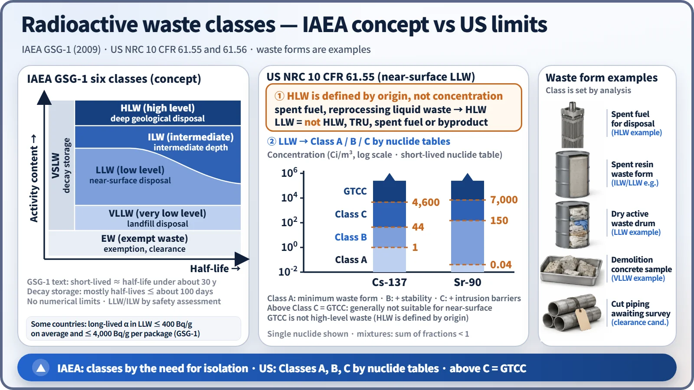
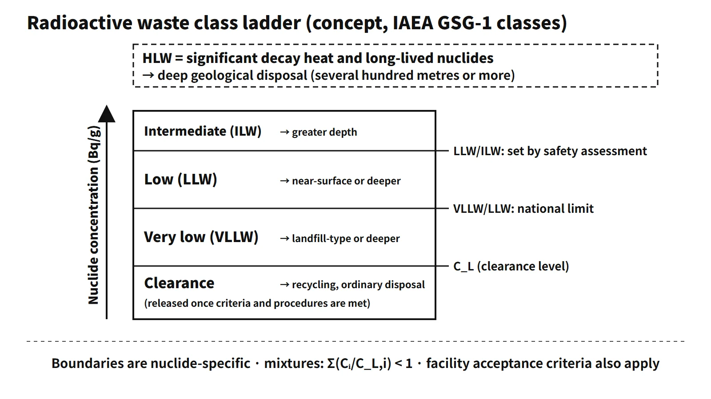

Waste, Fuel Cycle & Decommissioning · C-WD-003
Radioactive Waste Classification — IAEA GSG-1 Classes, Clearance and the US 10 CFR 61 System
Classes are set by how much isolation the waste needs; national systems turn that into nuclide-specific concentration limits that decide where the waste may be disposed of.
Radioactive waste classification sorts radioactive waste into classes according to activity concentration, heat generation rate and half-life. Because each class has its own permitted disposal methods and level of control, classification is the starting point for ensuring disposal safety.
Principle and mechanism
IAEA GSG-1 — six classes based on the need for isolation
IAEA GSG-1 (2009) replaced the 1994 three-class scheme (exempt / low and intermediate level, short- and long-lived / high level) with six classes. The classes are defined by how much isolation and containment the waste needs, not by fixed numbers:
| Class | Description | Disposal |
|---|---|---|
| EW (exempt waste) | Meets the criteria for exemption or clearance; individual dose of the order of 10 μSv per year | Released from regulatory control |
| VSLW (very short lived) | Nuclides with half-lives of about 100 days or less | Decay storage for up to a few years, then release |
| VLLW (very low level) | Above exemption levels but not needing a high level of isolation; typically one to two orders of magnitude above exemption levels | Landfill-type facility with limited regulatory control |
| LLW (low level) | Limited amounts of long-lived nuclides; needs isolation for a few hundred years | Near-surface disposal |
| ILW (intermediate level) | Long-lived nuclides need more isolation than near-surface disposal; no or limited heat dissipation needed | Intermediate depths of tens to hundreds of metres |
| HLW (high level) | Significant decay heat; typical activity 10⁴–10⁶ TBq/m³ | Deep geological disposal at several hundred metres or more |
Points to keep in mind:
- GSG-1 treats half-lives under about 30 years as short-lived.
- Its classification chart (activity content versus half-life) is conceptual and has no numerical boundaries.
- The LLW/ILW boundary cannot be defined generally; it depends on the safety assessment of the disposal facility. As a guide, some countries limit long-lived alpha emitters in LLW to 400 Bq/g on average and 4,000 Bq/g in any individual package.
- The 1994 scheme distinguished HLW by a thermal power of 2–20 kW/m³; GSG-1 does not specify a thermal power value.
National schemes — a ladder of nuclide-specific concentrations
National systems turn this concept into numbers. A common pattern is a ladder of nuclide-specific concentrations: the clearance level at the bottom, a very-low/low boundary set as a multiple of the clearance level, and a low/intermediate boundary given by a table of nuclide concentrations or by the disposal facility's acceptance limits. The boundaries are therefore not single values but differ for each nuclide. When several nuclides are mixed, the sum of fractions Σ(Cᵢ/C_L,i) is used for the decision. Deliberate mixing or dilution to meet a clearance level is prohibited.

Clearance and measurement
- Clearance: releasing material whose nuclide concentrations are confirmed to be below the clearance level from regulatory control, so that it can be managed as non-radioactive waste by incineration, landfill, recycling and so on.
- Clearance dose criterion: the basis of exemption and clearance is an individual dose of the order of 10 μSv per year (IAEA RS-G-1.7, cited in GSG-1).
- Minimum detectable concentration (MDC): the lowest detectable activity concentration, determined by measurement conditions such as the instrument, sample size, recovery and counting time. A detection target is set sufficiently below the clearance level, and the actual MDC must be at or below that target.
US 10 CFR 61.55 — Classes A, B, C and GTCC
The US NRC divides LLW intended for near-surface disposal into Classes A, B and C using nuclide tables based on intruder dose. Waste above Class C (greater-than-Class-C, GTCC) is generally not suitable for near-surface disposal. GTCC is not high-level waste: in the US, HLW is defined by origin (spent fuel, reprocessing liquid waste), and LLW has an exclusionary definition ("not HLW, TRU, spent fuel or byproduct material").
Representative values from the 10 CFR 61.55 tables:
| Nuclide | Class A limit | Class B limit | Class C limit |
|---|---|---|---|
| Cs-137 (Ci/m³) | 1 | 44 | 4,600 |
| Sr-90 (Ci/m³) | 0.04 | 150 | 7,000 |
| Ni-63 (Ci/m³) | 3.5 | 70 | 700 |
| α TRU (T½ > 5 years) | 10 nCi/g | – | 100 nCi/g |
Mixtures are classified with the sum of fractions (< 1). Class A has minimum waste-form requirements, Class B stability requirements, and Class C requires intrusion barriers in addition to stability.<!-- Unverified: the 500-year intruder-barrier design basis for Class C (10 CFR 61.7(b)(5)) was not read in the original — not stated in the text -->
What it means in a plant
- Determining the disposal route: the class determines the disposal method — the higher the class, the more isolation the facility must provide.
- Decommissioning waste: most of the concrete and metal from decommissioning a plant is very low level or can be cleared. The very low level class and landfill-type disposal are key means of reducing decommissioning waste volumes.
- Operational waste: concentrated liquid waste, spent resin and dry active waste are mostly low level; some spent resin and filters become intermediate level.
- Nuclide identification: on delivery to a disposal facility, the nuclides that make up most of the activity must be identified and the concentrations of H-3, C-14, Co-60, Cs-137 and others determined. Difficult-to-measure nuclides (DTM) are estimated with scaling factors.
- Spent fuel: whether spent fuel is waste depends on national policy; before a decision to dispose of it, it is managed as material in storage.
Regulatory and design criteria
- IAEA GSG-1 (2009): six classes based on the need for isolation; no numerical boundaries such as a thermal power value.
- US NRC 10 CFR 61.55 and 61.56: Classes A, B and C for near-surface disposal and their waste-form requirements; GTCC above Class C.
Easily confused pairs
| IAEA GSG-1 | US 10 CFR 61 | Typical disposal |
|---|---|---|
| EW (VSLW becomes EW after decay storage) | Not specified (case by case) | Ordinary waste |
| VLLW | Part of Class A | Landfill-type |
| LLW | Classes A, B, C | Near-surface |
| ILW | Part of GTCC | Intermediate depth |
| HLW | HLW (defined by origin) | Deep geological |
The correspondence between classes is conceptual. The IAEA sets boundaries by the need for isolation (long-lived nuclides, heat), the US by nuclide tables based on intruder dose, and many national schemes by nuclide concentration tables.
- Very low level waste is still radioactive waste; clearance applies only below the clearance level.
- The clearance dose of about 10 μSv per year is not the same thing as a disposal facility's post-closure performance objective.
- GTCC waste in the US is not high-level waste.
Key points at a glance
- Purpose: classification links each waste to the disposal method and level of control it needs.
- IAEA GSG-1: six classes — EW, VSLW, VLLW, LLW, ILW, HLW — defined by the need for isolation.
- Short-lived: half-life under about 30 years; VSLW about 100 days or less.
- LLW: near-surface, isolation for a few hundred years; ILW: tens to hundreds of metres; HLW: significant heat, deep geological disposal.
- No fixed numbers in GSG-1: the LLW/ILW boundary depends on the safety assessment; the 1994 HLW value of 2–20 kW/m³ was dropped.
- National ladders: clearance level → multiple of it → nuclide table; mixtures by the sum of fractions; no dilution.
- Clearance: below the clearance level, basis about 10 μSv per year individual dose → released from regulation.
- US: Classes A, B, C by intruder-dose tables (e.g. Cs-137: 1 / 44 / 4,600 Ci/m³); above C = GTCC, which is not HLW.
